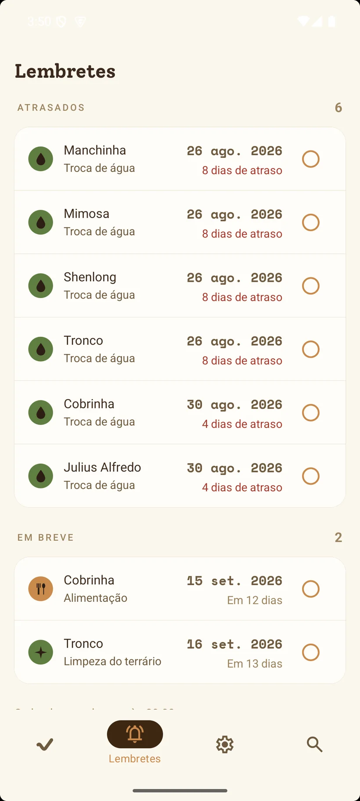

Ele avisa o que vence.
Uma notificação, no horário que você escolher, com as tarefas do dia para todos seus répteis. Alimentar a Manga, trocar a água de seis, limpar o terrário do Cacau. Se preferir ser avisado animal por animal, também dá.
